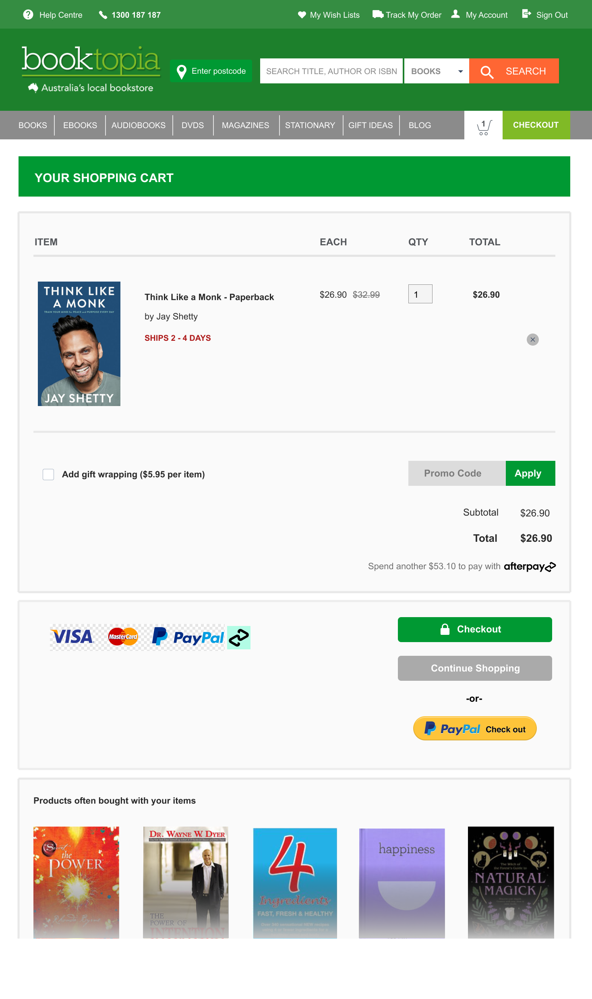

Scroll down
The checkout experience was reworked for Booktopia. The reserach and redesign of the experience was completed in 2 hours as a task. The main issue with the checkout experience was the cognitive overload with the information presented on the page. My main focus was to redesign the cart page to clearly present their information. Users wanted to "shorten the journey to get the answer" which they regarded the checkout experience to be somewhat long.
The main changes of the shopping cart page was the placement of the objects and the spacing of information. As cognitive overload was main issue for the users, fixing the placement of information was a priority to allow the user to properly follow the information flow. I took a step further and did a quick redesign of the checkout experience as seen below.